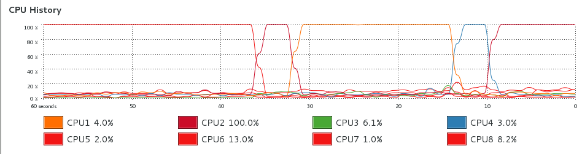
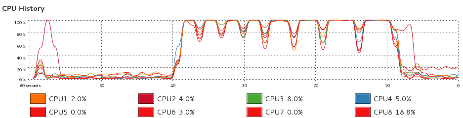

FEM repository example
Get the FEM repository
At the command line, clone the repo via ssh or https
git clone git@github.com:Duke-Ultrasound/fem.git
git clone https://github.com/Duke-Ultrasound/fem.git
Add fem subdirectories to MATLAB path
In MATLAB, run:
addpath(genpath('/path/to/your/git/repo'))
Initialize the ‘probes’ git submodule
At the command line, run:
git submodule init
git submodule update
Examine the VF10-5 test script
At the command line, run:
cat fem/test/vf105/run.sh
python ../../mesh/GenMesh.py --xyz -0.5 0.0 0.0 1.0 -3.0 0.0 --numElem 50 100 300
python ../../mesh/bc.py
matlab -nodesktop -nosplash -r "field2dyna('nodes.dyn',0.5,1.0,[0.0 0.0 0.02],7.2,'vf105','gaussian'); makeLoadsTemps('dyna-I-f7.20-F1.0-FD0.020-a0.50.mat','dyna-I-f7.20-F1.0-FD0.020-a0.50.mat',1000,400,4.2,0.01^3,'q',1); quit;"
ls-dyna-d ncpu=2 i=vf105.dyn
python ../../post/create_disp_dat.py
Edit the 'fempath’ argument in run.sh
python ../../post/create_res_sim_mat.py --dynadeck vf105.dyn --fempath /PATH/TO/GIT/REPO/fem/post
Reduce element #, generate the mesh
Edit run.sh to run faster for profiling (40 minutes otherwise!)
python ../../mesh/GenMesh.py --xyz -0.5 0.0 0.0 1.0 -3.0 0.0 --numElem 50 100 30
159681/159681 nodes written to nodes.dyn
Generate boundary conditions
python ../../mesh/bc.py
150000/150000 elements written to elems.dyn
Baseline Profiling
Profile the MATLAB code excerpt
field2dyna('nodes.dyn',0.5,1.0,[0.0 0.0 0.02],7.2,'vf105','gaussian');
makeLoadsTemps('dyna-I-f7.20-F1.0-FD0.020-a0.50.mat','dyna-I-f7.20-F1.0-FD0.020-a0.50.mat',1000,400,4.2,0.01^3,'q',1);
Insert into a MATLAB function
function [outputs] = runfield2dyna()
field2dyna('nodes.dyn',0.5,1.0,[0.0 0.0 0.02],7.2,'vf105','gaussian');
makeLoadsTemps('dyna-I-f7.20-F1.0-FD0.020-a0.50.mat','dyna-I-f7.20-F1.0-FD0.020-a0.50.mat',1000,400,4.2,0.01^3,'q',1);
outputs = [];
end
Open MATLAB Profiler
- Run and Time the code
runfield2dyna() - The profiler takes about 4 min, and the largest 'self time’ is for
Mat_field. - See detailed output stats here: Profiler Baseline Output
How can we speed up this fem/field/dynaField.m 'baseline’ excerpt?
numNodes = size(FIELD_PARAMS.measurementPointsandNodes, 1);
progressPoints = 0:10000:numNodes;
for i=1:numNodes,
if ~isempty(intersect(i, progressPoints)),
disp(sprintf('Processed %.1f%%', i * 100 / numNodes));
end
if i == 1
tic;
end
% include the lens correction (axial shift)
[pressure, startTime] = calc_hp(Th, FIELD_PARAMS.measurementPointsandNodes(i,2:4)+FIELD_PARAMS.lens_correction_m);
intensity(i) = sum(pressure.*pressure);
end
Notes about 'baseline’ code:
- runs through loop MANY times
- has conditional expressions in loop
- formats a string, and then prints it
- parameter to calc_hp calculated in loop
- startTime variable not used
- intensity not pre-allocated, grows in loop
Performance Optimization
Make some changes, preferably in a git branch:
- run through loop fewer times, with larger number of points per call to calc_hp
- remove conditional expressions from loop
- write a formatted string to the command line
- precalculate parameter for calc_hp
- startTime replaced wih
~ - pre-allocate intensity variable
See the new version of the loop:
numNodes = size(FIELD_PARAMS.measurementPointsandNodes, 1);
stepSize=20000;
intensity = zeros(1,numNodes);
% include the lens correction (axial shift)
points = FIELD_PARAMS.measurementPointsandNodes(:,2:4)+FIELD_PARAMS.lens_correction_m;
for i=1:stepSize:numNodes
fprintf('Processed %.1f%%\n', i * 100 / numNodes);
if i+stepSize < numNodes
[pressure, ~] = calc_hp(Th, points(i:i+stepSize-1,:));
else
[pressure, ~] = calc_hp(Th, points(i:numNodes,:));
end
intensity(i:i+length(pressure)-1) = sum(pressure.*pressure);
end
Add Multi-Threading
Multi-threading allows a program to access more resources of our machine. Most of the improvements in CPU throughput since the mid-2000’s have come from adding cores, not increasing clock rate (GHz).
Before
Field II Pro adds support for multi-threading, but our baseline example didn’t use it!  Figure 1: CPU History from our baseline run shows only 1 thread on 1 CPU core is used! Profiling took 4 minutes.
We can set Field II Pro’s
threadsparameter to 8 infem/field/field2dyna.m
FIELD_PARAMS.threads = 8;
Add this above the 'for’ loop in
fem/field/dynaField.m:
% Set number of threads if exists
if isfield(FIELD_PARAMS,'threads')
set_field('threads',FIELD_PARAMS.threads);
end
After
Now, run and see a big improvement!  Figure 2: All 8 threads are used, and duration is under 35 seconds.
- See detailed output stats here: Profiler Output with 8 Threads
- In the PDF notice the number of calls in the second column.
- Decreasing the number of iterations of the
forloop reduced the number of calls and 'self time’ of all the other functions.
Conclusions
- We made improvements to the main loop in the
dynaFieldroutine. - We practiced some git commands, learned about profiling, and about multi-threading.
- If these changes are validated against other test scripts and are proven speed things up without breaking the biggest simulations, then they could be considered to be pushed and merged into the 'master’ repository. In a separate branch they won’t break anyone else’s workflow.